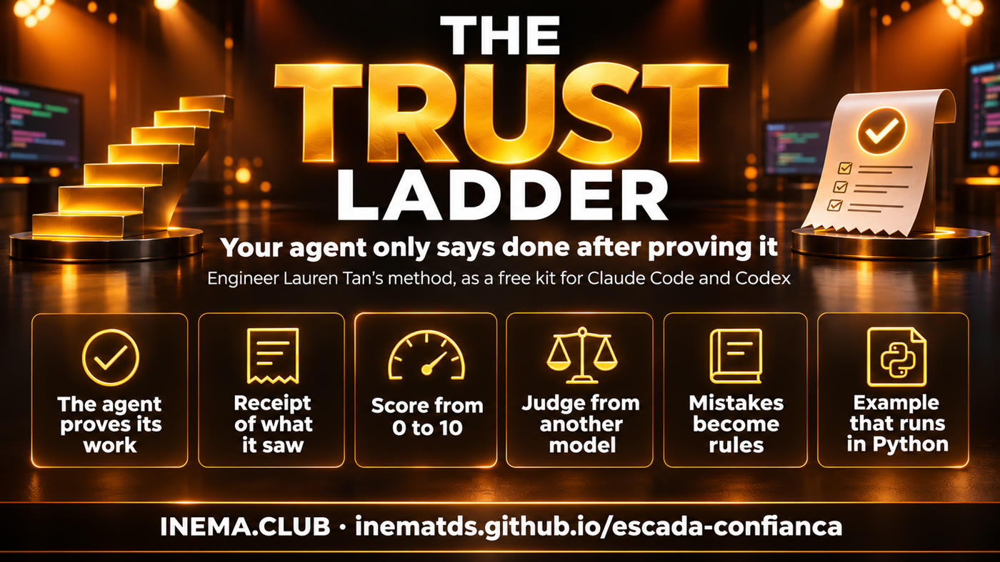

You ask the AI for something, it says done, and you lose the afternoon checking. A SpaceX engineer woke up to 20 finished deliveries from her agents. With the trust ladder, your agent only says done after it proves it.
When the AI says “done” without testing, you are the one who checks, and that eats the afternoon. The trust ladder is a three-step method so your coding agent (Claude Code or Codex) only delivers with proof: it uses what it built the way a user would and shows a receipt, it passes an evaluation with a score of 10 out of 10, and it turns each repeated mistake into a rule the computer enforces on its own. It is for people who already use AI agents on code and want to check less. The kit has ready-to-paste texts for your project and an example that runs with plain Python.

Video
Video in Portuguese.
The agent writes the code, glances over it and replies “done”. Nobody opened the screen, nobody tried the odd case. The checking is left to you.
“I fixed the sign-up” comes without the screen opened, without the test run, without what it saw. You can't know if it's true without walking the path again.
Every delivery lands back on your desk: open the app, test it, find the bug, explain again. The time the AI saved disappears in review.
You write “validate the email” today, and next week you write it again. With one agent that gets tiring. With ten running at once, it can't work.
Each step takes a piece of the checking off your hands. You climb one at a time; the first one already changes your day.
Before saying “done”, it uses what changed the way a user would: it opens the screen, reproduces the bug before fixing it, checks again afterwards, and hands over a receipt with what it did and what it saw. A map of the app's screens shows it where each feature lives.
An evaluation (a list of 8 to 15 cases with the right answer) gives a score from 0 to 10. When the answer is text, the score comes from a judge: another agent, from another model, so the agent doesn't agree with itself. The agent fixes things and runs again until 10 out of 10.
A mistake that showed up twice is no longer one more request: it becomes a rule the machine enforces, like an automated test or a code checker. The agent can forget an instruction; it can't skip a test.
The agent delivered a user sign-up and said “done”. It accepted an email without an @ and the same email twice. The kit has this case set up and runs the ladder on it.
In the proof, it accepted an invalid and a repeated email. In the evaluation, it got 7 of the 10 cases wrong. In the rule, it didn't call the email check. Result: “not done”.
It rejects an invalid email, a short password and a repeated sign-up; it gets all 10 cases right; the rule confirms the check is there. Result: “done with proof”.
Lauren Tan (@poteto) is a software engineer at SpaceXAI, on the Grok Bot team, and worked at Cursor before that. She calls the idea the “trust ladder”: the more the agent proves, the more work you can leave with it.
The numbers are hers, from the workshop: a thousand PRs in a month (a PR is a package of code changes ready to go into the project), almost 800 in the first 12 days of the next month, and about 20 PRs already on main in one morning, delivered by the agents while she slept.
The name “escada da confiança”, the sign-up example, the templates and the judge's score are by INEMA, adapted in Portuguese for Claude Code and Codex.
You don't need to set it all up at once. Each step below is worth it on its own.
Tell the agent it can only write “done” with the receipt attached: what it ran, what it saw and what it didn't test. The kit has the text ready to paste.
Pick a task that repeats and write down 10 examples with the right answer, including the ones that already went wrong. That is your evaluation.
When you are about to write the same comment for the second time, ask the agent for a test that keeps that mistake from coming back.
Want to install it in your project? See how to use it ↓
From here down is the technical part: the kit files, the commands and the example running. You don't need this part to understand what is above.
Markdown texts for your agent to read (in Portuguese), a CSV log and a Python example. Nothing to install besides Python, and only if you want to run the example.
kit/degrau1-prova/SKILL.md: the “prove before saying done” skill, with the RECEIPT template. mapa-de-telas.md: a table of where each app feature lives and how to tell it worked.
kit/degrau2-nota/avaliacao.md: how to build the evaluation in 4 steps and the request to repeat until 10/10. juiz.md: the judge prompt with a 10-item rubric and a JSON answer.
kit/degrau3-regra/erros-viram-regra.md: the ladder of rules (from the mistake that can't even exist down to the review comment) and the 5-minute routine. registro-de-erros.csv: where to log each mistake.
kit/AGENTS-escada.md: the three steps in one block for your project's CLAUDE.md (Claude Code) or AGENTS.md (Codex).
exemplo/escada.py runs the three steps on two sign-ups: cadastro_quebrado.py (what the agent delivered) and cadastro_corrigido.py (after the ladder).
tests/test_escada.py: 3 tests that confirm the broken one fails, the fixed one passes with 10/10, and the kit files are all there.
The block in CLAUDE.md/AGENTS.md makes the agent go through these stages before answering. Step 3 brings in the lint (automatic code checker) and your project's tests. The Python example does the same automatically and exits with code 0 only if all three steps pass.
To read and paste the kit, just the repository. To run the example, Python 3.9 or newer, with no extra libraries.
Standard library only. Check the version:
python3 --versionTo download the kit (or download the ZIP from GitHub).
git --versionThe agent that will read the block and the skill in your project. Either one works.
Steps 1 to 3 show the ladder working on the example. Steps 4 to 7 bring the kit into your project. Replace ../seu-projeto with the path to your folder.
Clone the repository and go into the folder.
git clone https://github.com/inematds/escada-confianca.git cd escada-confianca
The script shows the receipt, the score and the rule for each step, and exits with code 1.
python3 exemplo/escada.py cadastro_quebrado # ... "nota": 3 ... # NÃO está pronto — 0/3 degraus
The fixed one passes all three steps and exits with code 0.
python3 exemplo/escada.py cadastro_corrigido # PRONTO com prova — 3/3 degraus python3 -m unittest discover -s tests -v # Ran 3 tests ... OK
This adds the “Antes de dizer pronto” (“Before saying done”) section to CLAUDE.md (Claude Code) or AGENTS.md (Codex). Run it only once (running it again duplicates the block) and check with grep. Then open the file and replace the commands between < > with your project's, for example <lint> && <testes> becomes ruff check . && pytest in a Python project.
# Claude Code sed -n '/^## Antes de dizer/,$p' kit/AGENTS-escada.md >> ../seu-projeto/CLAUDE.md # Codex sed -n '/^## Antes de dizer/,$p' kit/AGENTS-escada.md >> ../seu-projeto/AGENTS.md # check (only one line should show up) grep -n "Antes de dizer" ../seu-projeto/CLAUDE.md # ou ../seu-projeto/AGENTS.md
The block expects both files in docs/. Then ask the agent to fill in the map with the text that is in mapa-de-telas.md itself. In Claude Code, the step 1 skill can also go in as a project skill.
mkdir -p ../seu-projeto/docs cp kit/degrau1-prova/mapa-de-telas.md kit/degrau3-regra/registro-de-erros.csv ../seu-projeto/docs/ # optional, Claude Code: skill "provar-antes-de-pronto" mkdir -p ../seu-projeto/.claude/skills/provar-antes-de-pronto cp kit/degrau1-prova/SKILL.md ../seu-projeto/.claude/skills/provar-antes-de-pronto/
Follow kit/degrau2-nota/avaliacao.md: pick a task, write 8 to 15 cases (the CASOS list in exemplo/escada.py is a template) and ask the agent for rounds until 10/10. For text answers, run kit/degrau2-nota/juiz.md on a different model from the one that did the work.
# the loop request, in kit/degrau2-nota/avaliacao.md (the kit has it in Portuguese): "Run <evaluation command>. While the score is below 10, read the cases that failed, fix the cause (not the case) and run again. Stop at 10/10 or after 5 rounds, and show me the score of each round."
“Lint” is the automatic code checker; “CI” is the tests that run on their own every time you push to GitHub. Log the mistake in docs/registro-de-erros.csv and use the request from kit/degrau3-regra/erros-viram-regra.md. In the example, the rule is the degrau3_regra function, which reads the code and fails any cadastrar that doesn't call validar_email.
# the request, in kit/degrau3-regra/erros-viram-regra.md (the kit has it in Portuguese): "This mistake has shown up before: <mistake>. Don't fix just this case. Propose the highest rule possible (type, lint, test or CI) that keeps the mistake from coming back, write the rule with a test that fails on the old code and passes on the new one, and run everything."
Excerpts of the output from exemplo/escada.py, condensed: the program prints the full JSON indented over many lines; here you see only the key fields and the last line, which prints exactly like this. The program prints in Portuguese.
{"degrau": 2, "passou": false, "nota": 3, "erros": ["e-mail sem arroba", "e-mail vazio", "senha curta", "e-mail repetido", "maiúscula repetida", "domínio sem ponto", "espaço no e-mail"]} {"degrau": 3, "passou": false, "regra": "cadastrar() precisa chamar validar_email() — REPROVADO"} NÃO está pronto — 0/3 degraus
{"acao": "cadastrar o mesmo e-mail de novo", "viu": {"ok": false, "erro": "e-mail já cadastrado"}} {"degrau": 2, "passou": true, "nota": 10, "erros": []} {"degrau": 3, "passou": true, "regra": "cadastrar() precisa chamar validar_email()"} PRONTO com prova — 3/3 degraus